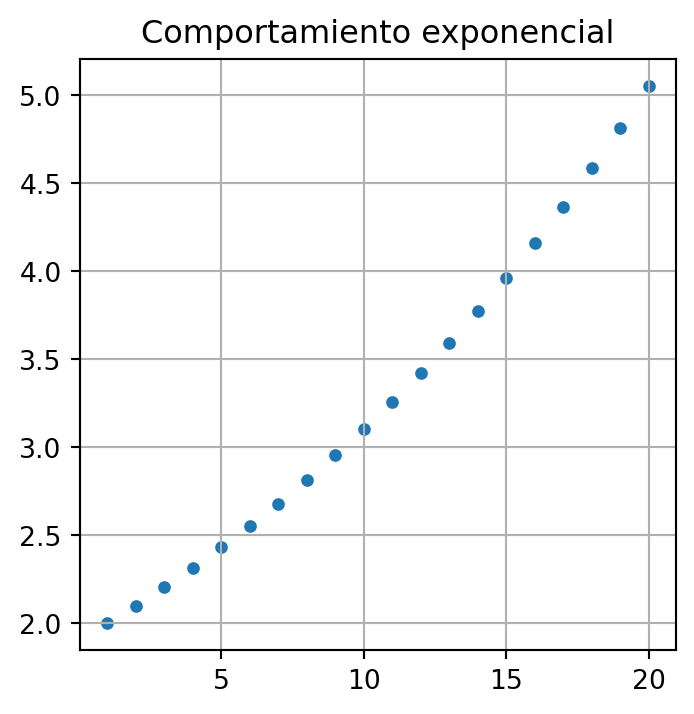
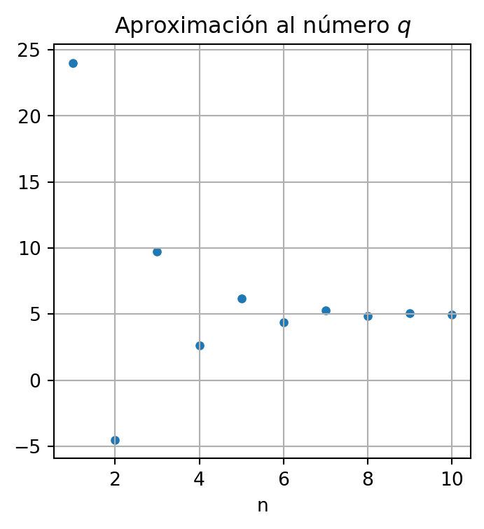
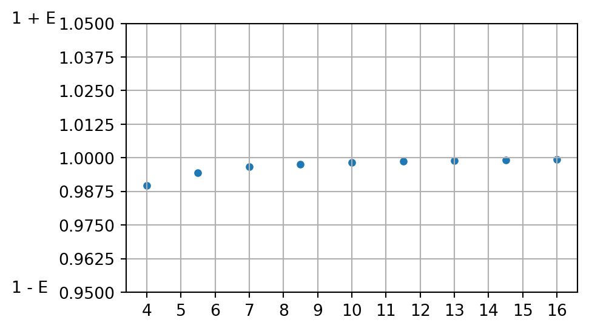
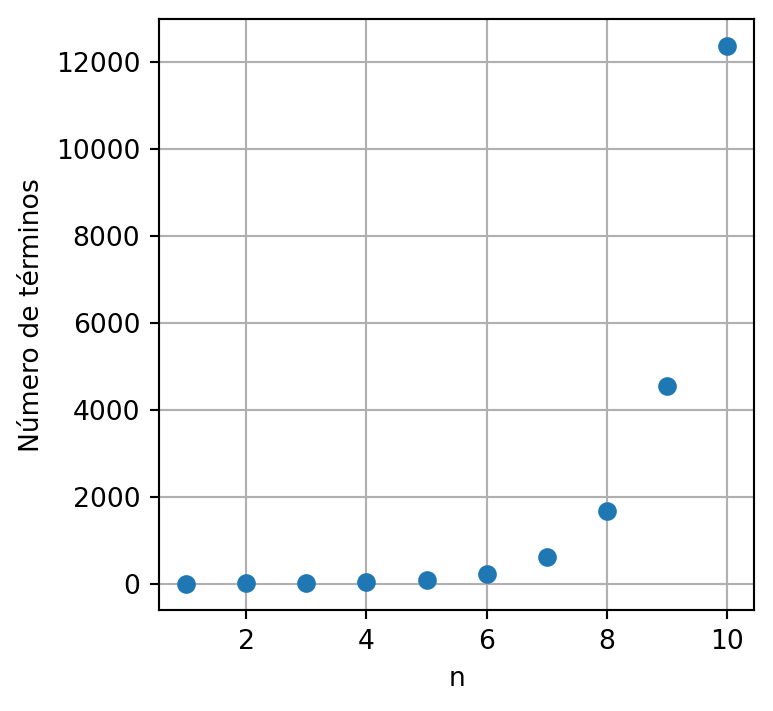
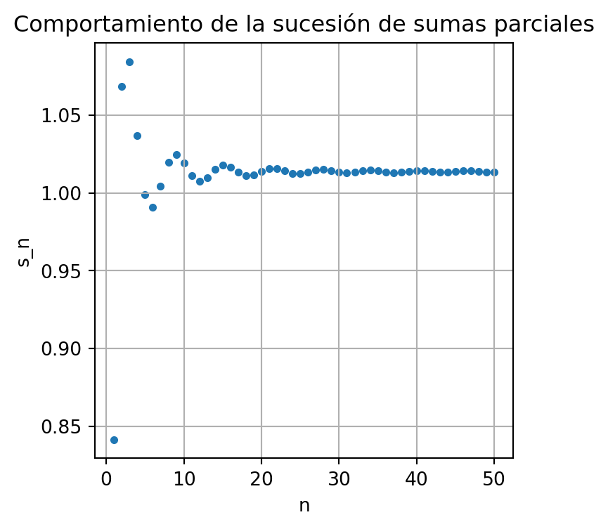
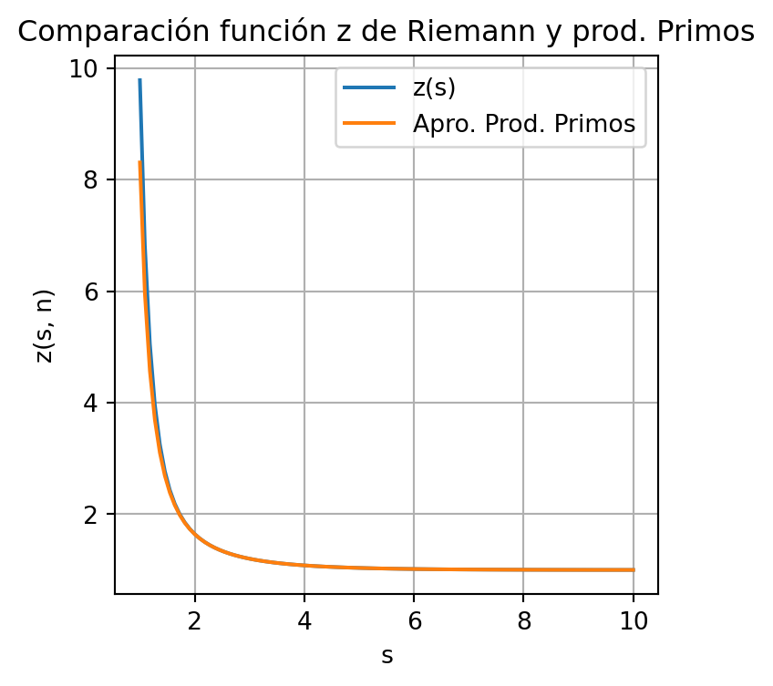

El concepto matemático de sucesión busca representar la evolución de un proceso que se construye a partir de una ley de formación.
Considere por ejemplo la siguiente asignación para las letras \(P\) y \(Q\)\[
P \to Q \quad \text{y} \quad Q \to PQ,
\] esto significa que la letra \(P\) se transforma en el paso siguiente en letra \(Q,\) mientras que la letra \(Q\) se transforma en las letras \(P\) y \(Q.\)
Supongamos que en un primer instante, digamos instante \(0,\) iniciamos en \(P.\) De acuerdo con la ley de formación en la etapa siguiente obtendríamos una letra \(Q.\) Esto lo podemos representar en la forma \[\begin{align*}
& 0: \quad P
\\
& 1: \quad Q
\end{align*}\] En la etapa 2 seguirían las letras \(P\), \(Q\), y de esta etapa seguirían las letras \(Q,\)\(P\) y \(Q\), es decir \[\begin{align*}
& 0: \quad P
\\
& 1: \quad Q
\\
& 2: \quad PQ
\\
& 3: \quad QPQ
\end{align*}\] De esta manera, el resultado de la cuarta y quinta etapa serían \[\begin{align*}
& 4: \quad PQQPQ
\\
& 5: \quad QPQPQQPQ
\end{align*}\]
Si contamos las letras en cada etapa del proceso, o iteración como le llamaremos a partir de este momento, se obtienen los siguientes valores: \(1,\)\(1,\)\(2,\)\(3,\)\(5,\)\(8, \dots\) secuencia de números conocida como la sucesión de Fibonacci. En esta el término presente, digamos \(a_n,\) se obtiene al realizar la suma de los dos términos anteriores \(a_{n-1}\) y \(a_{n-2}.\) Esto se puede representar matemáticamente en la forma \[
a_n = a_{n-1} + a_{n-2}.
\tag{1}\] Una expresión de esta forma recibe el nombre de relación de recurrencia, y es muy útil para describir procesos en los que la información presente depende de la información pasada. En el caso de la ecuación 1 los valores correspondientes con \(a_0\) y \(a_1\) se conocen como los valores iniciales de la relación de recurrencia.
Ejemplo 1 Considere la siguiente la siguiente relación de recurrencia \[
\begin{cases}
a_{n} = a_{n - 1} + d
\\
a_0 = j.
\end{cases}
\tag{2}\] Note que \[
a_0 = j, \quad a_1 = j + d, \quad a_2 = j + 2d, \ldots \, a_n = j + nd,
\] A la expresión \(a_n = j + nd\) se le conoce como la solución de la relación de recurrencia, que en este caso obedece a un comportamiento de forma lineal. Note que este comportamiento se puede entender como aquel en que la diferencia entre el valor presente y pasado es constante.
Ejemplo 2 Considere la siguiente la siguiente relación de recurrencia \[
\begin{cases}
a_{n} = r a_{n - 1}
\\
a_0 = j.
\end{cases}
\tag{3}\] Note que \[
a_0 = j, \quad a_1 = r j, \quad a_2 = r^2 j, \ldots \, a_n = r^n j
\] La expresión \(a_n = r^n j\) es la solución de la relación de recurrencia, que en este caso obedece a un comportamiento de forma exponencial. Este se puede entender como aquel en que el valor presente es proporcional al valor pasado.
Con el siguiente código graficamos un conjunto de \(20\) puntos cuyo comportamiento es exponencial, aquí se ha tomado \(r=1.05\) y \(a_0 = 2\)
import matplotlib.pyplot as pltimport numpy as np"""Valores asociados al número de datos (nd), dato inicial (k) y constante de proporcionalidad entre el dato presente y pasado (r)"""nd =20j =2r =1.05a = [j] x = np.linspace(1, nd, nd)for n inrange(1 , len(x) ): a.append( r*a[n-1] ) # relación de recurrencia en la forma r*a_(n-1)fig, ax = plt.subplots(figsize = (4,4) )ax.scatter(x, a, s =14)plt.grid()plt.title('Comportamiento exponencial')plt.show()

Si en la ecuación 3 hacemos \(r = 1 + t\) podemos escribir la relación de recurrencia como \[
\begin{cases}
a_n - a_{n-1} = t a_{n-1}
\\
a_0 = j
\end{cases}
\tag{4}\] en cuyo caso entenderiamos un comportamiento exponencial de un conjunto de datos, como aquel en donde la diferencia entre la información presente y pasada es proporcional a la pasada. Note que la solución de 4 es \[
a_n = (1 + t)^n j.
\tag{5}\] En el caso en que \(0 < t \leq 1\) esta expresión coincide con la fórmula de interés compuesto, en done \(t\) es la tasa de interés, \(j\) es el capital inicial, \(n\) es el número de períodos y \(a_n\) es el capital al final del \(n-\)ésimo período.
Ejemplo 3 Considere la siguiente relación. \[
\begin{cases}
a_n = \dfrac{a_{n-1} + q}{2},
\\
a_0 = p.
\end{cases}
\] Con \(p\) y \(q\) dos números reales. Note que \[
a_0 = p, \quad a_1 = \dfrac{p + q}{2}, \quad a_2 = \dfrac{p + 3q}{4} , \ldots \, ,a_n = \dfrac{p + (2^n - 1)q}{2^n}
\] Numéricamente se puede evidenciar que a medida que \(n\) toma valores cada vez más y más grandes, el valor de \(a_n\) se acerca al número \(q.\)
Ejemplo 4 Considere la siguiente relación de recurrencia \[
\begin{cases}
a_n = \dfrac{3q - a_{n-1}}{2},
\\
a_0 = p.
\end{cases}
\] con \(p\) y \(q\) números reales. Note que \[
a_0 = p, \quad a_1 = \dfrac{3q - p}{2}, \quad a_2 = \dfrac{p + 3q}{4} , \ldots \, ,a_n = \dfrac{p + (2^n - 1)q}{2^n}
\] Es interesante evidenciar que a medida que \(n\) toma valores cada vez más y más grandes, el valor de \(a_n\) se acerca de forma oscilante a \(q.\)
Con el siguiente código graficamos un conjunto de \(10\) puntos cuyo comportamiento se acerca de forma oscilante a \(q=5\). Se ha tomado \(a_0 = 24.\)
import numpy as npimport matplotlib.pyplot as pltnd =10q =5p =24x = np.linspace(1,nd, nd, dtype =int)a = [p]for n inrange(1, len(x)): a.append((3*q - a[n-1])/2)fig, ax = plt.subplots(figsize = (4,4) )ax.scatter(x, a, s =14)plt.grid()plt.title('Aproximación al número $q$')plt.xlabel('n')plt.show()

Convergencia de sucesiones
En los dos últimos ejemplos al inicio de este capítulo presentamos algunas sucesiones en la que sus términos se acercan a un cierto valor. Esa será precisamente nuestra labor a partir de este momento, determinar matemáticamente que se entiende que un conjunto de números se acerque a otro.
A lo largo de nuestras discusiones representaremos con \(V_r(p)\) al intervalo abierto de radio \(r\) cuyo centro es el punto \(p.\) Una forma matemática de representar este conjunto de números reales es la siguiente \[
V_r(p) = \{x \in \mathbb{R} : \vert {x - p} \vert < r \}.
\] De manera intuitiva podríamos decir que un conjunto de números se acerca a un punto \(p\) de la recta, si a medida que hacemos más y más pequeño el radio \(r\) de \(V_r(p)\), seguimos encontrando al menos un elemento del mencionado conjunto.
Para esclarecer un poco más lo que hemos mencionado, es necesario entrar en algunos detalles que nos permitirán entender algunas propiedades geométricas de los puntos en la recta.
Definición 1 (Punto interior) Diremos que un punto \(p\) es un punto interior de un conjunto \(S\) si existe un intervalo \(V_r(p) \subset S.\)
Definición 2 (Punto de acumulación) Diremos que un punto \(p\) es un punto de acumulación de un conjunto \(S\) si para cualquier \(r > 0\) de nuestra elección, se verifica que \(V_r(p) \setminus \{p\} \cap S \neq \emptyset\).
Definición 3 (Conjunto acotado de números reales) Sea \(S\) un conjunto de números reales. Diremos que este conjunto es acotado si existe una constante \(M\) tal que \(\vert {x} \vert < M\) para todo \(x \in S.\)
En particular, si \(x < M\) para todo \(x \in S,\) diremos que \(S\) es acotado superiormente, y si \(M < x\) para todo \(x \in S,\) diremos que \(S\) es acotado inferiormente.
Las dos definiciones anteriores permiten construir un resultado fascinante sobre los números reales y la idea del infinito.
Teorema 1 Si \(S\) un conjunto infinito y acotado de de números reales, entonces \(S\) admite al menos un punto de acumulación.
Definición 4 (Límite de una sucesión) Una sucesión \(\{ a_n \}\) de números reales converge a un número \(p,\) si para cada \(\epsilon > 0\) de nuestra elección, existe un entero \(N \equiv N(\epsilon)\) tal que \[
\vert a_n - p \vert < \epsilon \text{ para todo } n > N.
\] Esto se puede escribir como \[
\lim_{n \to \infty} a_n = p, \text{ o bien, } a_n \to p \text{ cuando } n \to \infty
\] que se lee respectivamente como: “el límite de \(a_n\) cuando \(n\) tiende a infinito es igual a \(p\)” o “\(a_n\) tiende a \(p\) cuando \(n\) tiende a infinito”.
En este momento nos surge la pregunta: ¿ Es posible que existan varios límites para una sucesión.? Esta cuestión la resolvemos con el siguiente resultado.
Teorema 2 Si \(\{a_n \}\) es una sucesión convergente entonces su límite es único.
Prueba. Supongamos que \(p\) y \(p'\) son dos límites de la sucesión \(\{a_n \}.\) De acuerdo con esto, dado un \(\epsilon\) de nuestra elección, existe un número \(N\) tal que \[
\vert a_n - p \vert < \epsilon \text{ y } \vert a_n - p' \vert < \epsilon
\] para todo \(n > N.\) De acuerdo con la desigualdad triangular \[
\vert p - p' \vert \leq \vert a_n - p \vert + \vert a_n - p' \vert < 2 \epsilon
\] con lo que \(p = p'.\)
Definición 5 (Condición de Cauchy) Diremos que un sucesión \(\{a_n\}\) cumple la condición de Cauchy, si para cada \(\epsilon >0\) de nuestra elección, existe un entero \(N \equiv N(\epsilon)\) tal que \[
\vert a_m - a_n \vert < \epsilon \text{ para todo } n,m > N.
\tag{6}\]
Teorema 3 Si \(\{a_n \}\) es una sucesión convergente entonces satisface la condición de Cauchy.
Prueba. La demostración de este resultado es una consecuencia inmediata de la desigualdad triangular. En efecto, si \(a_n \to p\) cuando \(n \to \infty\) entonces para un \(\epsilon > 0\) de nuestra escogencia, existe un \(N\) tal que \[
\vert a_n - p \vert < \epsilon \text{ y } \vert a_m - p \vert < \epsilon
\] para todo \(m, n > N.\) La prueba finaliza al sumar ambas desigualdades ya que \[
\vert a_m - a_n \vert \leq \vert a_n - p \vert + \vert a_m - p \vert < 2\epsilon,
\]
Teorema 4 Toda sucesión que satisface la condición de Cauchy es acotada.
Prueba. Sea \(\{ a_n\}\) una sucesión de números reales, como se verifica la condición de Cauchy para un \(\epsilon > 0\) existe un \(N\) tal que \[
\vert a_{N + 1} - a_m \vert < \epsilon \text{ para todo } m \geq N + 1
\] esto es equivalente a decir que \(a_m \in V_{\epsilon} (a_{N+1})\) para todo \(m \geq N+1.\) Considere ahora el siguiente conjunto de números reales \[
B = \{ \vert a_1 - a_{N + 1}\vert , \vert a_2 - a_{N+1}\vert , \ldots , \vert a_{N} - a_{N+1} \vert\},
\] y note que \(\vert a \vert < \vert a_{N + 1} \vert + \max B + \epsilon\) para todo \(a \in \{ a_n \}\). Aquí \(\max B\) corresponde al máximo elemento del conjunto \(B.\)
Como una consecuencia de este resultado y del Teorema 1 podemos concluir lo siguiente
Teorema 5 Toda sucesión infinita de números reales que satisface la condición de Cauchy es convergente en los números reales.
Ejemplo 5 Considere la sucesión \(\{ a_n \}\) en donde \[
a_n = \frac{n}{1 + k n},
\] para \(k \neq 0.\)
Para un \(k\) fijo se puede verificar asignando valores de \(n\) cada vez más grandes, que la sucesión se acerca al valor \(1/k.\) Lo interesante sería determinar el valor del \(n\) para el cual, a partir de ese valor, se consigue una aproximación deseada. Note que \[
\Big\vert \frac{n}{1 + kn} - \frac{1}{k} \Big\vert = \frac{1}{\vert k + k^2 n \vert}.
\] De manera que \(\vert a_n - 1/k\vert < \epsilon\) sería equivalente a \[
\frac{1}{\epsilon} \leq \vert k + k^2 n \vert \leq \vert k \vert + k^2 n
\] con lo que \[
\frac{1}{k^2} \left( \frac{1}{\epsilon} - \vert k \vert \right) \leq n.
\] De acuerdo con esto, si \(k = 0.1\) y queremos conseguir una aproximación en la forma \(\vert a_n - 10 \vert < 0.001\) basta tomar \(n > 99990.\) Además note que si tomamos \(m = 125000\) y \(n = 100000\) entonces \[
\vert a_m - a_n \vert = 0.00019 < 0.002
\] verificándose la relación presente en la ecuación 6. Aquí de nuevo es importante mencionar que la escogencia de \(\epsilon\) es arbitraria.
Ejemplo 6 Considere la sucesión \(\{ a_n \}\) en donde \[
a_n = \frac{1}{n^r},
\] con \(r > 0.\)
Para un \(r\) fijo podemos verificar asignando valores a \(n\) cada vez más y más grandes que \(a_n\) toma valores cercanos a cero. De acuerdo con esto, para un \(\epsilon > 0\) de nuestra elección queremos encontrar un \(N\) para el cual se verifique \[
\frac{1}{n^r} < \epsilon \quad \text{ para todo } \quad n > N.
\] En efecto, basta tomar \(N\) como un entero tal que \[
\left(\frac{1}{\epsilon} \right)^{1/r} < N
\]
Ejemplo 7 Considere la sucesión \(\{ a_n \}\) en donde \[
a_n = \left( \frac{1}{a - \delta} \right)^n
\] para \(a > 1\) y \(\delta\) un número real tal que \(a - \delta > 1.\)
La experimentación numérica indica que para una escogencia arbitraria de valores \(a\) y \(\delta\) que verifiquen las condiciones dadas, a medida que se asignen valores de \(n\) cada vez más grandes, la sucesión toma valores cercanos a 0.
En efecto, si \[
\left( \frac{1}{a - \delta} \right)^n < \epsilon,
\] al aplicar logaritmo natural obtenemos \[
n > -\frac{\ln{\epsilon}}{ \ln{(a - \delta)}},
\] y de acuerdo con esto, si \(a = 1.01,\)\(\delta = 0.001\) y queremos encontrar valores de \(n\) tales que \(a_n < 0.0001\) basta tomar \(n \geq 1028.\)
Ejemplo 8 Considere la sucesión \(\{a_n\}\) en donde \[
a_n= \cos{\left(\frac{1}{n} \right)}
\] De acuerdo con la definición de funciones trigonométricas es fácil notar que \[
1 - \frac{1}{n} < \cos{\left(\frac{1}{n} \right)} < 1
\] y de acuerdo con esto entonces \(\cos(1/n) \to 1\) cuando \(n \to \infty.\)
Ejemplo 9 Considere la sucesión \(\{a_n \}\) en donde \[
a_n = n \sin{\left( \frac{1}{n} \right)}.
\] De acuerdo con la definición de funciones trigonométricas sobre el círculo de radio 1, es claro que \[
\frac{1}{n} \cos{\left( \frac{1}{n} \right)} \leq \sin{\left( \frac{1}{n}\right)} \leq \frac{1}{n}
\] y al multiplicar esta desigualdad por \(n,\) obtenemos \[
\cos{\left( \frac{1}{n} \right)} \leq n \sin{\left( \frac{1}{n}\right)} \leq 1
\tag{7}\]
Lo interesante de este resultado es notar que el valor de convergencia de la sucesión \(\{ a_n \}\) esta comprendido entre los valores de \(\cos(1/n)\) y \(1.\) De acuerdo entonces con el Ejemplo 8 se tiene que \(n \sin(1/n) \to 1\) cuando \(n \to \infty,\) es decir \[
\lim_{n \to \infty} n \sin{\left(\frac{1}{n} \right)} = 1.
\]
Se sigue de forma inmediata de 7 que la sucesión \(\{ n \sin{1/n} \}\) es creciente, y como \(\cos{(1/n)} \to 1\) cuando \(n \to \infty\) entonces para un \(\epsilon > 0\) de nuestra elección obtenemos \[
1 - \epsilon < \cos{\left( \frac{1}{n}\right)} < 1 + \epsilon
\] Teniendo en cuenta que la función \(\arccos{(x)}\) es decreciente, se sigue que \[
\frac{1}{\arccos{(1 - \epsilon)}} < n,
\tag{8}\] y de acuerdo con 7 se verifica que \[
1 - \epsilon < n \sin{\left( \frac{1}{n}\right)} \leq 1
\] para los valores de \(n\) que satisfacen 8.
Lo anterior nos permite determinar un valor de \(n\) para el cual los valores de la sucesión \(\{n \sin{(1/n)} \}\) estén comprendidos entre \(1-\epsilon\) y \(1.\)
import numpy as npimport matplotlib.pyplot as plt"""Declaracion funcional de n*sin(1/n) y de arccos(n)"""def f(n):return n*np.sin(1/n)def g(n):return np.arccos(n)"""Valor de epsilon y de n"""epsilon =0.05n =int(np.ceil(1/g(1- epsilon)))"""Gráfico del conjunto de puntos"""x = np.linspace(n,4*n, 2*n +1)y = f(x)plt.figure(figsize=(5,3))plt.scatter(x, y , s=14)plt.grid()plt.yticks(np.arange(1- epsilon, 1+ epsilon, epsilon/4))plt.xticks(np.arange(n, 4*n +1, 1))plt.text(epsilon, 1- epsilon, '1 - E')plt.text(epsilon, 1+ epsilon, '1 + E')plt.show()

Sucesión de sumas parciales
Como una extensión natural del concepto de sucesión, se define una sucesión cuyos términos son la suma parcial de cada uno de los términos de otra sucesión. Por ejemplo, si \(\{ a_n\}\) es una sucesión, identificaremos con \(s_1\) al número \(a_1,\) con \(s_2\) al número \(a_1 + a_2,\) con \(s_3\) al número \(a_1 + a_2 + a_3\) y en general \[
s_n = a_1 + a_2 + \cdots + a_n
\] Un resultado conocido es aquel en donde los términos \(\{a_n\}\) cumplen la siguiente ley de formación: \(a_1 = 1,\)\(a_2 = r,\)\(a_3 = r^{2}\) y en forma general \(a_n = r^{n-1}\) para una cierta cantidad \(r > 0,\)\(r \neq 1.\) Para este caso ote que \[
s_n = 1 + r + \cdots + r^{n-1} + r^{n}.
\tag{9}\] Al multiplicar esta última expresión por \(r\) obtenemos \[
rs_n = r + r^2 + \cdots + r^{n} + r^{n+1}.
\tag{10}\] y es fácil notar que si restamos 9 de 10 obtenemos \[
s_n = \frac{1 - r^{n+1}} { 1 - r }
\tag{11}\]
Es conveniente emplear una notación que permita identificar los elementos de la sucesión \(\{ a_n \}\) con su suma. Esta notación se conoce como notación de sumatorio y corresponde con el símbolo \(\sum,\) y se acostumbra a escribir con sub y super índices para indicar el recorrido del parámetro asociado a la suma, es decir \[
\sum_{k = 1}^{n} a_{k} = a_{1} + a_{2} + \cdots + a_{k}.
\] De acuerdo con esto, la expresión 11 se puede escribir como \[
\sum_{k = 1}^{n} r^k = \frac{1 - r^{n+1}}{1 -r}.
\tag{12}\]
Definición 6 Sea \(\{ a_n \}\) una sucesión de números reales. Si la sucesión \(s_n \to p\) cuando \(n \to \infty,\) se acostumbra a escribir \[
\sum_{k = 1}^{\infty} a_n = p,
\] y se dice que la serie \(\sum_{k = 1}^{\infty} a_n\) es convergente. En particular convergente al número \(p.\)
Un resultado interesante y de gran utilidad es una consecuencia inmediata de la ecuación 12 y del Ejemplo 7. Este establece que si \(0 < r < 1\) entonces \[
\sum_{n = 0}^{\infty} r^{n} = \frac{1}{1-r}.
\tag{13}\] De menara equivalente a la notación de sumatorio, también existe una para los productos. Esta es \(\prod_{k = 1}^{n} a_{n}\) y corresponde con \[
\prod_{k = 1}^{n} a_{k} = a_1 \cdot a_2 \cdot \cdots \cdot a_n.
\] Empleando esta notación y la ecuación 13 se puede probar fácilmente el siguiente resultado
Teorema 6 Sea \(a > 1\) y \(\delta > 0\) tales que \(a - \delta > 1,\) y sean \(a_1 , a_2 , \ldots , a_n , \ldots\) números que verifican \(a_n \geq a - \delta\) para todo \(n.\) Entonces \[
\sum_{n = 1}^{\infty} \left( \prod_{k = 1}^{n}\frac{1}{a_{k}} \right) \leq \frac{a- \delta}{a - \delta - 1}.
\]
Prueba. Note que para todo \(a_n\) , con \(n = 1, 2, \ldots\) se cumple \[
\frac{1}{a_k} \leq \frac{1}{a - \delta}
\] y de acuerdo con esto \[
\sum_{n = 1}^{\infty} \left( \prod_{k = 1}^{n}\frac{1}{a_{k}} \right) \leq \sum_{n = 1}^{\infty} \frac{1}{(a - \delta)^n}.
\] La prueba finaliza al hacer \(r = 1/(a - \delta)\) en 13
Corolario 1 Sean \(a\) y \(\delta\) reales positivos tales que \(V_{\delta}(a) \subset (0,1),\) y sean \(a_1,\)\(a_2, \ldots a_n , \ldots\) números reales tales que \(a_n \in V_{\delta}(a)\) para todo \(n.\) Entonces \[
\frac{a + \delta}{a + \delta - 1} \leq \sum_{n = 1}^{\infty} \left( \prod_{k = 1}^{n}\frac{1}{a_{k}} \right) \leq \frac{a - \delta}{a -\delta - 1}
\]
Note que si \(\delta = 0\) entonces \(a_n = a\) para todo \(n,\) y en este caso el resultado coincide con la igualdad que se ha presentado en la ecuación 13 para el caso \(r = 1/a.\)
Teorema 7 Sean \(a_1, a_2 , \ldots a_n\) números reales que verifican la condición \(a_n \geq 2\) para todo \(n.\) Entonces \[
\prod_{k = 1}^{n} a_{k} > 1 + a_1 + a_1 \cdot a_2 + a_1 \cdot a_2 \cdot a_3 + \cdots + \prod_{k = 1}^{n-1}a_{k}.
\tag{14}\]
Prueba. Como \(a_n \geq 2\) para todo \(n,\) entonces para \(a_1\) y \(a_2\) se verifica que \[
a_1 a_2 \geq 2 a_1 = a_1 + a_1 \geq 2 + a_1 > 1 + a_1,
\] de manera equivalente para $a_1, $ \(a_2\) y \(a_3\) se tiene que \[
a_1 \cdot a_2 \cdot a_3 \geq 2 a_1 \cdot a_2 = a_1 \cdot a_2 + a_1 \cdot a_2 > 1 + a_1 + a_1 \cdot a_2,
\] la prueba finaliza al aplicar inducción sobre el subíndice \(n.\)
Al dividir cada término de 14 por \(\prod_{i = 1}^{k}a_{i}\) obtenemos de forma inmediata el siguiente resultado.
Corolario 2 Sean \(a_1, a_2, \ldots , a_n\) números reales que verifican la condición \(a_n \geq 2\) para todo \(n.\) Entonces \[
\frac{1}{a_n} + \frac{1}{a_n \cdot a_{n-1}} + \frac{1}{a_{n} \cdot a_{n-1} \cdot a_{n-2}} + \cdots + \frac{1}{\prod_{k = 2}^{n-1}a_{i}} +\frac{1}{ \prod_{k = 1}^{n} a_{k} } < 1
\]
Note que si tomamos \(n-1\) números enteros consecutivos en la forma \(a_{n-1} = 2,\)\(a_{n-2} = 3,\) y de esta forma hasta \(a_{1} = n,\) la expresión anterior toma la siguiente forma \[
\frac{1}{2!} + \frac{1}{3!} + \frac{1}{4!} + \cdots + \frac{1}{(n-1)!} + \frac{1}{n!} < 1
\tag{15}\] De esta último resultado se desprende de forma natural al sumar 2 lo siguiente \[
2 < 2 + \frac{1}{2!} + \frac{1}{3!} + \frac{1}{4!} + \cdots + \frac{1}{(n-1)!} + \frac{1}{n!} < 3
\tag{16}\] para todo entero \(n.\)
El número entre 2 y 3 al que se aproxima este valor se denota comúnmente con la letra \(e,\) esto lo precisaremos la siguiente definición.
Definición 7 (Número \(e\)) Definimos la constante numérica \(e\) como \[
\sum_{k = 0}^{\infty} \frac{1}{k!} = e.
\tag{17}\]
import numpy as npimport mathimport matplotlib.pyplot as pltN = np.linspace(1, 10, 10, dtype=int)def aprox_e(n): terminos = [1/math.factorial(i) for i inrange(n)]return np.sum(terminos)plt.figure(figsize=(4,4))plt.scatter(N, [aprox_e(n) for n in N], s=14)plt.grid()plt.title("Aproximación al número $e$")plt.xlabel("N")plt.ylabel("$e$")plt.show()

Númericamente se puede experimentar con una versión modificada del código anterior para obtener más cifras decimales del número \(e\).
En el siguiente programa obtenemos las primeras cien cifras de \(e\) para un valor de \(n = 71\) en la función aprox_\(e(n)\) del código anterior.
import numpy as npimport mathfrom decimal import Decimalfrom decimal import getcontextgetcontext().prec =101def aprox_e(n): terminos = [Decimal(1)/Decimal(math.factorial(i)) for i inrange(n)]return np.sum(terminos)print(aprox_e(71))
Para las series podemos identificar dos situaciones que nos permiten determinar su convergencia. Verificaremos esto a partir del comportamiento exponencial de un conjunto de datos. ::: {.callout-warning icon=“false”} ## ::: {#exm-cociente} ## Cociente dos a dos De acuerdo con nuestra definición del comportamiento exponencial de un conjunto de puntos es claro que \[
\frac{a_{n+1}}{a_n} = r
\] para \(n = 0, 1, \dots\) Note que \[
\begin{align*}
\sum_{k = 0}^{n} a_{k} & = a_0 + a_1 + a_2 + \cdots + a_n
\\
& = a_0( 1 + r + r^2 + \cdots r^n )
\\
& = a_0 \frac{1 - r^{n+1}}{1 - r}
\end{align*}
\] y si \(0 < r < 1\) de acuerdo con 13 entonces \[
\sum_{n = 0}^{\infty} a_{n} = \frac{a_0}{1 - r}
\] ::: :::
Ejemplo 10 (Raíz del término \(n-\)ésimo) Supongamos que tenemos una sucesión descrita por la relación \(a_n = r^n,\) es claro que \[
a_{n+1} = r^{n+1} = r \cdot r^n = r a_n
\] y esto indica que la raíz \(n-\)ésima de \(a_n\) coincide con la tasa de proporcionalidad entre el valor futuro y presente del conjunto de datos. De acuerdo con esto se sigue del ejemplo anterior que si \[
\sqrt[n]{a_n} = r , \text{ con } 0 < r < 1
\] entonces \[
\sum_{n = 0}^{\infty} a_{n} = \frac{1}{1 - r}
\]
Aunque los dos últimos ejemplos se han construido haciendo referencia al comportamiento exponencial de un conjunto de datos. Estas observaciones se pueden generalizar para el estudio de otras series. En efecto, si tenemos una serie \(\sum_{n = 1}^{\infty}a_n\) que verifica \[
\lim_{n \to \infty} \frac{a_{n+1}}{a_n} = r,
\] Entonces para un \(\epsilon > 0\) de nuestra elección existe un entero \(N\) tal que \[
\Big\vert \frac{a_{n+1}}{a_n} - r \Big\vert < \epsilon \text{ para todo } n > N
\] o de manera equivalente \[
(r - \epsilon) a_{n} < a_{n + 1} < (r + \epsilon) a_n,
\] de acuerdo con esto \[
(r - \epsilon)^k a_n < a_{n + k} < (r + \epsilon)^k a_n
\] y si identificamos con \(r^+ = r + \epsilon\) y con \(r^- = r - \epsilon\) entonces se sigue de la ecuación 12\[
\frac{r^- - (r^-)^{m+1}}{1 - r^-} a_n < \sum_{k= 1}^{m} a_{n+k} < \frac{r^+ - (r^+)^{m+1}}{1 - r^+} a_n
\] De manera que si \(0 < r < 1\) entonces siempre es posible encontrar un \(\epsilon >0\) tal que \(r^-\) y \(r^+\) esten comprendidos igualmente entre \(0\) y \(1\) y de acuerdo con esto. \[
\frac{r^-}{1 - r^-} a_n < \sum_{k= 1}^{\infty} a_{n+k} < \frac{r^+ }{1 - r^+} a_n
\]
Ejemplo 11 (Series Telescópicas) Considera la sucesión \(\{a_n\}\) en donde \[
a_{n} = b_{n+1} - b_{n}
\] siendo \(b_n\) el término \(n-\)ésimo de otra sucesión. Note que \[
\begin{align*}
\sum_{k = 1}^{n} a_k & = b_2 - b_1 + b_3 - b_2 + \cdots + b_{n} - b_{n - 1} + b_{n+1} - b_{n}
\\
& = b_{n+1} - b_{1}
\end{align*}
\] Cuando una sucesión de números presente este comportamiento, se le llama suma telescópica, y será de mucha importancia para la construcción teórica a lo largo del documento.
Si \(b_n \to p\) cuando \(n \to \infty\) entonces \[
\sum_{n = 1}^{\infty} a_n = p - b_1
\]
Ejemplo 12 Considere la sucesión \(\{ a_n \}\) en donde \[
a_n = n - n^{p}(n - q )^{1 - p},
\tag{18}\] Se puede probar que \[
a_n \to q(1 - p) \text{ cuando } n \to \infty
\tag{19}\] En efecto, despues de algunas manipulaciones algrebraicas es claro que \[
a_n = n - (n - q)\left( 1 + \frac{q}{n - q}\right)^p.
\tag{20}\] y de acuerdo con el Teorema general de binomio \[
\left( 1 + \frac{q}{n - q} \right)^p = \sum_{k = 0}^{\infty} {p \choose k} \frac{q^k}{(n - q)^k}
\]
Podemos escribir 20 como \[\begin{align*}
a_n &= n - (n-q)\left( 1 + p \frac{q}{(n-q)} + \frac{p(p-1)}{2!}\frac{q^2}{(n-q)^2} + \cdots\right)
\\
\\
& = q(1 - p) - \frac{p(p-1)}{2!}\frac{q^2}{(n-q)} - \frac{p(p-1)(p-2)}{3!}\frac{q^3}{(n-q)^2} - \cdots
\end{align*}\] y obtenemos 19 cuando hacemos tender \(n\) a infinito.
Podemos sacar provecho del ejemplo anterior para demostrar una interesante desigualdad que nos será útil a lo largo del documento.
Tomemos \(q = 1\) en la ecuación 18. Note que \(a_n\) es creciente y como ya se ha visto \(a_n \to 1 - p\) cuando \(n \to \infty.\) De acuerdo con esto \[
\frac{n - n^{p}(n - 1)^{1-p}}{1 - p} \geq 1 \quad \text{ para } \quad n = 2, 3, 4, \ldots
\tag{21}\] y despues de un par de manipulaciones algebráicas, \[
\frac{1}{n^p} \leq \frac{n^{1-p} - (n -1)^{1-p}}{1 - p}.
\tag{22}\] Al sumar desde \(k = 2\) hasta \(n\), obtenemos \[
\sum_{k=2}^{n}\frac{1}{k^p} \leq \frac{1}{1-p}\sum_{k=2}^{n} \left( k^{1-p} - (k -1)^{1-p} \right) = \frac{n^{1-p} - 1}{1 - p}
\] y sumando 1 a ambos lados de la desigualdad \[
\sum_{k=1}^{n}\frac{1}{k^p} \leq \frac{n^{1-p} - p}{1 - p}
\tag{23}\]
Si en \(n^{1-p}\) tomamos \(p>1\) se sigue del Ejemplo 6\[
n^{1 - p} = \frac{1}{n^{p-1}} \to 0 \text{ cuando } n \to \infty
\] y de acuerdo con esto hemos probado el siguiente resultado
Teorema 8 Si \(p>1\) entonces \[
\sum_{n=1}^{\infty} \dfrac{1}{n^p} \leq \frac{p}{p-1}
\]
Una función de gran importancia en matemáticas, es la función \(z\) de Riemann, \[
\zeta(p) = \sum_{n=1}^{\infty} \frac{1}{n^p}
\] en el siguiente código se muestra el gráfico de la aproximación de la función sumando los primeros \(1000\) términos de la serie con valores de \(p\) entre 1 y 10.
import numpy as npimport matplotlib.pyplot as pltx = np.linspace(1, 10, 100)def z(p , n ): lista = [ 1/(k**p) for k inrange(1,n -1) ]return np.sum(lista)plt.figure(figsize=(4,4))plt.plot(x, [z(k, 1000) for k in x ])plt.title("Aproximación función z de Riemann")plt.xlabel("p")plt.ylabel("z(p, n)")plt.grid()plt.show()

La serie armónica
Una serie conocida por su lento crecimiento y que no es convergente, es la serie armónica, definida como \[
\sum_{n = 1}^{\infty} \frac{1}{n} = 1 + \frac{1}{2} + \frac{1}{3} + \cdots
\]
import numpy as npimport matplotlib.pyplot as pltN = np.linspace(1, 10, 10, dtype=int)def lar(n): armonica = [1] k =2while np.sum(armonica) < n: armonica.append(1/k) k = k +1returnlen(armonica)plt.figure(figsize=(4,4))plt.scatter(N, [lar(n) for n in N], s=14)plt.grid()plt.ylabel('Número de términos')plt.xlabel('n')plt.show()

Realizaremos ahora los cocientes dos a dos de términos consecutivos el número de terminos en la serie armónica para alcanzar un valor determinado.
"""cálculo de cocientes dos a dos términos consectivos"""N = np.linspace(2, 9, 9, dtype=int)plt.figure(figsize=(4,4))plt.scatter(N, [lar(n+1)/lar(n) for n in N], s=14)plt.grid()plt.ylabel('Número de términos')plt.xlabel('n')plt.show()
Continuidad de funciones
La palabra continuidad surge en muchos contextos, y la asociamos cuando queremos hacer referencia a un proceso que no tenga saltos abruptos o interrupciones. Esto claro esta suponiendo de ante mano que se conoce cual debería de ser el comportamiento esperado de dicho proceso, para categorizar un salto o interrupción como algo anómalo.
Límite de una función
En el capítulo anterior definimos y encontramos el límite de sucesiones. En esta sección encontramos el límite de una función y profundizaremos un poco más en la naturaleza de los puntos sobre la recta y como la imagen de estos a través de una función empiezan a orbitar alrededor de un valor, o alejarse cada vez más y más de algún valor de referencia. A lo largo de este capítulo emplearemos las notaciones \(V^+_\delta(p)\) y \(V^-_\delta(p)\) para referirnos a los conjuntos
Definición 8 Sea \(f : S \to T\) y \(p\) un punto de acumulación de \(S,\) véase Definición 2 La notación \[
\lim_{x \to p} f(x) = l.
\] se lee “el límite de \(f\) cuando \(x\) tiene a \(p\) es igual a \(l\)” lo que significa que dado un \(\epsilon > 0\) de nuestra elección podemos encontrar un \(\delta\) tal que \[
f(x) \in V_{\epsilon}(l) \text{ para todo } x \in V_{\delta}(p)\setminus \{ p \} \cap S.
\]
Definición 9 Sea \(f : S \to T\) y \(p\) un punto de acumulación de \(S.\) La notación \[
\lim_{x \to p^+} f(x) = l.
\] se lee “el límite de \(f\) cuando \(x\) tiene a \(p\) por la derecha es igual a \(l\)” lo que significa que dado un \(\epsilon\) de nuestra elección podemos encontrar un \(\delta\) tal que \[
f(x) \in V_{\epsilon}(l) \text{ para todo } x \in V^+_{\delta}(p) \setminus \{ p \} \cap S.
\] De manera similar entenderemos la notación \[
\lim_{x \to p^-} f(x) = l,
\] con la diferencia de que tomaremos \(V^{-}_{\delta}\) en lugar del conjunto \(V^{+}_{\delta},\) y en este caso leeremos \(\eqref{eq:lim_iz}\) como: `` el límite de \(f\) cuando \(x\) tiene a \(p\) por la izquierda es igual a \(l\).’’
Definición 10 Sea \(f : S \to T\) y \(p\) un punto de \(S.\) Diremos que \(f\) es continua en \(p\) si \[
\lim_{x \to p} f(x) = f(p).
\] Si \(f\) es continua en todo punto de \(S\) entonces diremos que \(f\) es continua en \(S.\)
Note que de acuerdo con la definición de límite, lo anterior es equivalente a decir que \(f\) es continua en \(p\) si para cada \(\epsilon\) de nuestra elección, existe un \(\delta\) tal que \[
\vert f(x) - f(p )\vert < \epsilon \text{ siempre y cuando } \vert x - p \vert < \delta \text{ para todo } x \in V_{\delta} \cap S.
\] o de manera equivalente \[
f(V_{\delta}(p)) \subset V_{\epsilon}(f(p)),
\] y esto sugiere que si \(\{ a_n \}\) es una sucesión arbitraria de números reales tal que \(a_n \to p\) cuando \(n \to \infty,\) entonces la sucesión \(\{ f(a_n) \}\) es tal que \(f(a_n) \to f(p)\) cuando \(n \to \infty.\)
Ejemplo 13 De acuerdo con la definición de la función \(f(x) = \sin{x}\) note que \[
\vert \sin{x} - \sin{p }\vert < \vert x - p \vert
\] y de acuerdo con esto dado \(\epsilon > 0\) basta tomar \(\delta = \epsilon,\) y de acuerdo con esto la función \(f(x) = \sin{(x)}\) es continua en el punto \(p.\)
Ejemplo 14 Considere la función \(f(x) = \dfrac{1}{x}\) definida en \(S = (0,1)\)
Para un número \(p \in S\) dado un \(\epsilon\) se puede escoger un \(\delta\) tal que \(f(x) \in V_\epsilon(f(p))\) para todo \(x \in V_{\delta}(p).\) En efecto, note que la preimagen del valor \(1/p + \epsilon\) es \(p/(1 + \epsilon p),\) y de \(1/p - \epsilon\) es \(p/(1 - \epsilon p)\) y ambos valores están respectivamente a izquierda y derecha de \(p.\) Asociados a estas preimágenes encontramos dos los valores \[
\delta_0 = p - \frac{p}{1 + \epsilon p} = \frac{\epsilon p^2}{1 + \epsilon p},
\] y \[
\delta_1 = \frac{p}{1 - \epsilon p} - p = \frac{\epsilon p^2}{1 - \epsilon p},
\] y es claro que \(\delta_0 < \delta_1.\) De acuerdo con esto, si \(\epsilon = 0.01\) y \(p = 0.3\) basta tomar \(\delta \leq 0.0029\) para garantizar que si \(x \in V_{\delta}(p)\) entonces \(f(x) \in V_{\epsilon}(f(p)).\)
Es importante resaltar que en el ejemplo anterior se hace manifiesta la dependencia que tiene \(\delta\) con respecto del punto \(p\) y \(\epsilon,\) es decir \(\delta \equiv \delta(p, \epsilon).\)
Un cambio en el conjunto \(S\) de este ejemplo va a cambiar por completo la dependencia con respecto de \(p\) de \(\delta.\) En efecto, considere ahora un punto \(a\) con \(0 < a < 1\) y la función \(f(x) = 1/x\) definida en \(S = [a, 1).\) Note que dado un \(\epsilon > 0\) se verifica que \[
\frac{\epsilon a^2}{1 + \epsilon a} \leq \frac{\epsilon p^2}{1 + \epsilon p} \text{ para todo } p \in S.
\] De acuerdo con esto, dado \(\epsilon > 0,\) tomando \(\delta = \epsilon a^2 / (1 + \epsilon a),\) note que \(\delta \equiv \delta(\epsilon),\) se verifica que \[
f(V_{\delta}(p)) \subset V_{\epsilon}(f(p)),
\] para todo \(p \in S.\)
La situación aquí presentada motiva la siguiente definición.
Definición 11 Sea \(f\) una función definida en un conjunto \(S.\) Diremos que \(f\) es uniformemente continua si para cada \(\epsilon > 0\) de nuestra elección podemos encontrar un \(\delta \equiv \delta(\epsilon)\) tal que \[
\vert f(x) - f(y) \vert < \epsilon \text{ siempre que } \vert x - y \vert < \delta
\] para todo \(x, y \in S.\)
Consecuencias de la continuidad
La continuidad de un proceso tiene una bella propiedad que nos permite en cierto sentido predecir el comportamiento en una cierta vecindad de un valor, si tenemos suficiente información sobre el comportamiento de este proceso en dicho valor.
Teorema 9 Sea \(f\) una función continua en \(S = (a, b).\) Si para un punto interior \(p\) de \(S\) se cumple que \(f(p) > 0,\) entonces existe una vecindad \(V_r(p)\) tal que \(f(x) > 0\) para todo \(x \in V_{r}(p).\)
Prueba. Como \(f\) es continua en \(p,\) entonces para un \(\epsilon > 0\) de nuestra escogencia, existe un \(\delta\) tal que \[
f(p) - \epsilon < f(x) < f(p) + \epsilon \text{ para todo } x \in V_{\delta}(p)
\] la prueba finaliza a tomar cualquier valor \(\epsilon < f(p)\)
Teorema 10 Sea \(f\) una función continua en \(S = [a,b]\) tal que \(f(a) f(b) < 0\). Entonces existe al menos un punto \(p\) interior de \(S\) tal que \(f(p) = 0.\)
Prueba. Consideremos el conjunto \(\mathcal{A} = \{ x \in S: f(x) > 0 \}.\) Como \(\mathcal{A}\) es no vacío y acotado, entonces es plausible pensar en la existencia de un elemento \(p \in S\) tal que \(x \leq p\) para todo \(x \in \mathcal{A}\) y que dado \(\delta > 0\) de nuestra elección, se verifica que \(p - \delta < x\) para algún \(x \in \mathcal{A}.\)
Vamos a probar que \(f(p) = 0.\) En efecto, si \(f(p) > 0\) de acuerdo con el Teorema \(\ref{teo:signo}\) existe \(V_{\delta}(p)\) tal que \(f(x) > 0\) para todo \(x \in V_{\delta}(p)\) y de acuerdo con esto existe al menos un \(x\) con \(p < x < p + \delta\) tal que \(f(x) > 0\) y esto contradice el echo de que \(x \leq p\) para todo \(x \in \mathcal{A}\).
Por otro lado, si \(f(x) < 0\) de acuerdo con el Teorema \(\eqref{teo:signo}\) existe \(V_{\delta}(p)\) tal que \(f(x) < 0\) para todo \(x \in V_{\delta}(p),\) y de acuerdo con esto para todo \(x\) tal que \(p - \delta < x\) se tiene que \(f(x) > 0,\) lo que es una contradicción con el echo de que dado \(\delta > 0\) de nuestra elección, se verifica que \(p - \delta < x\) para algún \(x \in \mathcal{A}.\)
Corolario 3 Si \(f\) una función continua en \(S = [a,b]\) tal que \(f(a) \neq f(b),\) entonces para cualquier punto \(c\) comprendido entre \(f(a)\) y \(f(b)\) existe al menos un punto \(p\) interior a \(S\) tal que \(f(p) = c.\)
Prueba. Note que la función \(h(x) = f(x) - c\) verifica las hipótesis del Teorema \(\ref{teo_bolzano}\).
Integración
En este capítulo buscaremos entender y realizar una escritura matemática de un antiguo método desarrollado por los griegos conocido como método exhaustivo, que consistía en encontrar un estimativo del área de una región descomponiendo esta en regiones más simple para las que fuese sencillo calcular el área. De esta forma el área de la región desconocida sería la suma de todas las áreas conocidas.
Integral de Riemann
Definición 12 Una partición \(P\) de un intervalo \(S = [a,b]\) es el conjunto de puntos \(P = \{x_0, x_1, \ldots , x_{n-1} ,x_n \}\) tales que \[
a = x_0 < x_1 < \cdots < x_{n-1} < x_n = b.
\] Una partición \(P'\) se dice más fina que otra partición del mismo intervalo si \(P' \supset P.\)
Emplearemos la notación \(\Delta x_k\) para indicar la diferencia \(\Delta x_k = x_k - x_{k-1}\) siendo \(x_{k-1}\) y \(x_{k}\) elementos de una partición \(P.\)
Definición 13 Sea \(f\) una función definida en \(S = [a,b].\) La suma de Riemann de \(f\) en \(S\), en notación \(S(P,f)\) corresponde con el número \[
S(P, f) = \sum_{k = 1}^{n} f(t_k) \Delta x_k \text{ en donde } t_k \in [x_{k-1}, x_{k}].
\] Note en particular que el valor de \(S(P,f)\) depende de la elección de \(P.\)
Ejemplo 15 Considere la función \(f(x) = \floor{x}\) definida en el intervalo \(S = [0,10],\) y consideremos una partición de dicho intervalo
Definición 14 Diremos que una función \(f\) es Reimann integrable en un intervalo \(S = [a,b]\) si existe un número \(I,\) tal que para cada $ $ de nuestra elección, existe una partición \(P_\epsilon \equiv P(\epsilon)\), y se verifica \[
\vert S(P, f) - I\vert < \epsilon.
\] El número \(I\) se representa como \(I = \int_{a}^{b} f(x) \, dx\) y se lee: `` la integral de \(f\) con respecto de \(x\) entre \(a\) y \(b\).’’
Teorema 11 Si \(f\) es una función continua en \(S = [a,b]\) entonces es Riemann integrable en \(S.\)
Prueba. Debido a la continuidad de \(f\) en \(S\), para una partición arbitraria \(P = \{x_0 , x_1, \ldots, x_n \}\) la función \(f\) alcanza su menor y mayor valor en el intervalo \(\left[x_{k-1}, x_{k} \right].\) Identifiquemos estos valores respectivamente con \(m_k\) y \(M_k\). Es claro que \[
\sum_{k = 1}^{n} m_k \Delta x_k \leq S(P, f) \leq \sum_{k = 1}^{n} M_k \Delta x_k
\] Por otro lado, como una consecuencia del Corolario \(\ref{cor:bolzano}\) sean \(r_{k}\) y \(s_{k}\) puntos en \([x_{k-1}, x_{k}]\) tales que \(f(r_{k}) = m_k\) y \(f(s_{k}) = M_k.\) Ahora bien, como \(f\) es continua en \(S = [a,b],\) es uniformemente continua, y de acuerdo con esto para un \(\epsilon > 0\) de nuestra escogencia, existe un \(\delta \equiv \delta(\epsilon)\) tal que \(\vert f(s_k) - f(r_k)\vert < \epsilon\) siempre que \(\vert s_k - r_k \vert < \delta\) para todo \(s_k,r_k \in S.\) De acuerdo con esto \[
\sum_{k=1}^{n} \left( M_k - m_k \right) \Delta_k = \sum_{k=1}^{n} \left( f(s_k) - f(r_k) \right) \Delta_k < \epsilon(b-a).
\] lo que finaliza la prueba.
Diferenciación
Sea \(p \in S\) un punto interior de un conjunto \(S\) de \(\mathbb{R}\) y \(f:S \to T\) una función de valor real. Consideremos la función \[
\phi(x) = \frac{f(x) - f(p)}{x - p},
\] La función \(\phi\) tiene una interesante interpretación geométrica, pues resulta ser la pendiente de la recta que pasa por los puntos \((x, f(x))\) y \((p, f(p)).\)
Definición 15 Una función \(f:S \to T\) es diferenciable en un punto \(p\) interior de \(S,\) si la función \[
\phi(x) = \frac{f(x) - f(p)}{x - p},
\] es continua en \(p.\)
Comúnmente el símbolo \(\phi(p)\) se representa como \(f'(p)\) o \(\dfrac{d}{dx}f(p)\) y en ambos casos se leen como: `` la derivada de \(f\) con respecto de \(x\) evaluada en \(p.\)’’ Es decir \[
\phi(p) \equiv f'(p) \text{ o } \phi(p) \equiv \frac{d}{dx}f(p).
\]
Teorema 12 Sea \(f\) y \(g\) dos funciones diferenciables en un punto interior \(p\) de un conjunto \(S\) y sean \(\alpha\) y \(\beta\) números reales. Entonces \[
\frac{d}{dx} \left( \alpha f(p) + \beta g(p)\right) = \alpha \frac{d}{dx} f(p) + \beta \frac{d}{dx}g(p).
\]
Prueba. Consideremos la función cociente \[
\varphi(x) = \frac{\alpha f(x) + \beta g(x) - \alpha f(p) - \beta g(p)}{x - p}
\] Al agrupar y sacar factor común \(\alpha\) y \(\beta,\) obtenemos \[
\varphi(x) = \alpha \frac{f(x) - f(p)}{x - p} + \beta \frac{g(x) - g(p)}{x - p},
\] y la prueba termina al hacer \(x \to p.\)
Ejemplo 16 Derivada de la función \(f(x) = c\) siendo \(c\) una constante.
Note que en este caso la función cociente \(\phi(x)\) toma siempre el valor de \(0,\) y de acuerdo con esto \[
\frac{d}{dx}f(p) = 0,
\] para cualquier punto \(p\) en el dominio de definición de \(f.\)
Ejemplo 17 Derivada de la función \(f(x) = x^{n}\) siendo \(n\) un entero no negativo.
Note que \[\begin{align*}
\phi(x) & = \frac{x^n - p^n }{x - p}
\\
& = x^{n-1} + p x^{n-2} + p^{2} x^{n -3} + \cdots + p^{n - 2} x + p^{n-1}
\end{align*}\] y de acuerdo con esto \[
\lim_{x \to p} \phi(x) = \phi(p) = \frac{d}{dx} f(p) = n p^{n-1}.
\]
Teorema 13 Sean \(f:S \to T\) y \(g:S \to U\) dos funciones diferenciables en un punto \(p\) interior de \(S.\) Entonces para la función \(h(x) = f(x) g(x)\) se cumple que \[
\frac{d}{dx} h(p) = f(p) \frac{d}{dx}g(p) + g(p) \frac{d}{dx}f(p)
\]
Prueba. Considere la función cociente \[
\phi(x) = \frac{h(x) - h(p)}{x - p},
\] y note que \[\begin{align*}
\phi(x) &= \frac{f(x) ( g(x) - g(p) ) + g(p) ( f(x) - f(p ) )}{x-p}
\\
\\
&= f(x) \frac{g(x) - g(p)}{x - p} + g(p) \frac{f(x) - f(p)}{x - p},
\end{align*}\] y la prueba termina al hacer \(x \to p.\)
Consecuencias de la diferenciabilidad
Teorema 14 Sea \(f: S \to T\) una función con derivada continua en un punto \(p\) interior de \(S\) tal que \(\dfrac{df}{dx}(p) > 0.\) Existe \(V_\delta(p) \subset S\) tal que \[
\frac{f(x) - f(y)}{x - y} > 0
\] para todo \(x, y \in V_{\delta}(p)\) con \(x \neq y.\)
Prueba. Como \(\dfrac{df}{dx}(p) > 0,\) debido a la continuidad de la derivada existe una \(V_{\delta}(p)\) tal que \(\dfrac{df}{dx}(y) > 0\) para todo \(y \in V_{\alpha}(p),\) y de acuerdo con esto, existe una \(V_{\beta}(y) \subset V_{\alpha}(p)\) en donde el cociente \[
\frac{f(x) - f(y)}{x - y} > 0
\] para todo \(x \in V_{\beta}(y)\) con \(x \neq y.\) Tomemos ahora \[
V_{\delta}(p) = \bigcup_{y \in V_{\alpha}(p)}V_{\beta}(y).
\]
Es importante mencionar que en el caso de que \(\dfrac{df}{dx}(p)<0\) entonces existe una \(V_\delta(p) \subset S\) tal que \[
\frac{f(x) - f(y)}{x - y} < 0
\] para todo \(x, y \in V_{\delta}(p)\) con \(x \neq y.\) La prueba de esto es similiar a la anterior con la salvedad de que debemos cambiar el sentido de las desigualdades.
Definición 16 (Máximo local-Mínimo local) Sea \(f:S \to T.\) Un punto en \(p\) interior de \(S\) se conoce como un máximo local de \(f\) si existe una \(V_{\delta}(p) \subset S\) en la que se verifica que \[
f(p) \geq f(x)
\] para todo \(x \in V_{\delta}(p).\)
La definición para mínimo local es similar salvo por el hecho del cambio de sentido de la desigualdad.
Teorema 15 Sea \(f: S \to T\) una función diferenciable que alcanza en \(p,\) un punto interior de \(S,\) un máximo o mínimo local, entonces \(\frac{df}{dx}(p) = 0\)
Sea \(f \equiv f(x)\) una función diferenciable con respecto de la variable \(x.\) Supongamos ahora que existe una función \(s \equiv s(x)\) igualmente diferenciable tal que \(\dfrac{d s}{dx} \neq 0.\) De acuerdo con el Teorema de la función inversa existe una función \(m \equiv m(s)\) tal que \(t \equiv m(s).\) Considere ahora una función \(h(s) = f(m(s)).\) Note que \[
\frac{dh}{ds}\quad \equiv \quad \frac{df}{ds} = \frac{df}{dx} \Big\vert_{m(s)} \frac{dm}{ds}
\] Por otro lado, recuerde que \(m(s(x)) = x\) y al derivar con respecto de \(x\) obtenemos \[
\frac{dm}{ds} \frac{ds}{dx} = 1
\] y por lo tanto la ecuación anterior se puede escribir como \[
\frac{df}{ds} = \frac{df}{dx} \Big\vert_{m(s)} \left( \frac{ds}{dx} \right)^{-1}
\]